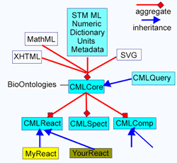
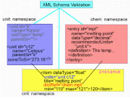

Chemistry International
Vol. 24, No. 4
July 2002
Markup Languages
- How to Structure Chemistry-Related Documents
by
Peter Murray-Rust and Henry S. Rzepa
Although
the use of markup languages in publishing goes back to the 1960s when
IBM introduced GML (Generalized Markup Language), which subsequently
evolved into the standard SGML, most authors are nowadays more familiar
with the more recent implementation, referred to as HTML (HyperText
Markup Language). The rapid rise in the use of HTML in conjunction with
the growth of the World Wide Web was in large measure due to its ease
of use for achieving presentational and visual effect. However, its
limitations as a mechanism for expressing precisely defined data and
meanings were not always adequately recognized. These limitations meant
that in areas such as molecular sciences where precise meanings are
essential, a variety of often proprietary solutions continued to be
used to define and manipulate molecular "data" and information.
XML
offers a general, powerful, and extensible mechanism for handling
both the "capture" and the publication of chemical information.
|
The publishing
processes were seen as quite separate and the process of translating
data, information, and knowledge into a published entity remained an
activity requiring much human perception. It is also worth noting that
the reverse process of converting the published materials back into
usable data remained equally human intensive and hence expensive.
The need
to reconcile these two extremes was recognized at the first World Wide
Web conference in 1994. A solution gelled shortly after the conference
as a remarkable communal effort resulted in the specification of extensible
markup language or XML. The ultimate vision of XML , as described by
Berners-Lee, is the creation of a "Semantic Web."1
The
rationale for this impressive effort included the following:
- Provision
of a more universal infrastructure for publishing
- Recognition
that the use of XML will require subject-specific vocabularies called
"ontologies" Ontology is defined as a description–such as a formal
specification of a program–of the concepts and relationships
that can exist for a software agent or a community of agents.
- Provision
of a mechanism for enhancing quality ("validation") l Promotion of
the creation of dynamic hyper-documents
- Recognition
of the need to be able to reuse components of documents for other
purposes
- Provision
of a mechanism for creating smart archives, in which the re-usable
components (information objects) can be readily identified
- Creation
of an infrastructure for underpinning the emerging areas of e-business
The extension
to chemistry included, therefore, the creation of a new generation of
ontologically rich, primary publication and a clear division of the
respective roles of humans and software agents (robots). Thus,
humans should be able to:
- Publish
all their data automatically
- Eliminate
errors from publications
- Use
the published literature as a database
- Understand
information from other domains
Robots
should be able to:
- Analyze
publications (on whatever scale)
- Create
secondary publications
- Purchase
chemicals
- Synthesize
chemicals from literature
To achieve
this, we argue that a number of prerequisitesmust be in place:
- Automatic
data capture, especially from instruments. We note that in 30 years
we have moved from using instruments that captured data often only
in analogue form (chart paper) to using standard computers to capture
and process data to most recently an increasing tendency for placing
these computers online and connecting them to centralized data stores.
- Common
ontologies for a specific community (e.g., molecular science)
- Ontologically
guided authoring.
- Issues
Involved in "Capturing" Chemistry
- The Current Position of XML
- Global Open Activity in Scientific XML
- Some Essentials of an XML System
- Creating Valid XML Documents
- Ontologies of Relevance to Chemistry
- Namespaces–The
Key to Making It Unique
- Dictionaries and Schemas
- Document Structure and Metadata
- Conclusions
- References
Issues
Involved in "Capturing" Chemistry
The following
extract2 from a typical science journal illustrates
both how precisely data and information must be represented, but also
how much human perception is required to translate this information
(e.g., to a reproducible experiment or a mechanistic interpretation):
| "Thiamin phosphate
synthase catalyzes the formation of thiamin phosphate from 4-amino-5-(hydroxymethyl)-2-methylpyrimidine
pyrophosphate and 5-(hydroxyethyl)-4-methylthiazole phosphate. The
reaction involves... dissociative mechanism... carbenium ion intermediate...
and pyrimidine iminemethide observed in the crystal..." |
Note the
profusion of chemical structure information, concepts, and terms, which
only a trained human chemist could easily process. Quantitative concepts
and units are also ubiquitous:
| "A 500 ml
aliquot of 0.8 mM TP synthase in 50 mM
Tris-HCl (pH 7.5) and 6 mM MgCl2 incubated at room temperature
with 50uM CF3HMP-PP." |
An even
greater degree of human perception is required when handling graphical
chemical representations, which may contain many, often fuzzy and dangerous,
human-only semantics (e.g., 2-D representations of 3-D properties, relative
stereochemistry, aromaticity, hydrogen and other "weak" bonding, use
of generic and "R" groups, reaction arrows, and mechanisms, etc.). The
challenge, therefore, is to develop an infrastructure that can be routinely
used to capture, store, and appropriately filter and display such information.
The
Current Position of XML
As it
is in 2002, XML offers a general, powerful, and extensible mechanism
for handling both the "capture" and the publication of chemical information.
In particular, XML allows for the first time this process to operate
equally well in both directions. Our basis for stating this derives
from the following observations:
- XML
is increasingly accepted as an information infrastructure.
- The
protocols are all public and many of the tools are open source.
- XML
is vendor neutral, but with heavy vendor involvement.
- There
is a large communal investment in generic tools (e.g., business2business,
e-commerce).
- XML
has a modular approach; an application is built from components.
- Domains
are expected to create domain-specific XML protocols and tools.
- XML
is increasingly universal in back-ends, middleware,and servers.
- Support
for XML from database vendors is rapidly increasing.
- XML
has close interoperability with other informatics standards such as
UML, OMG/CORBA, etc.
- There
is increasing support for "XML over the net" and from browsers (e.g.,
Internet Explorer, Netscape 6, etc).
- XML
is very well supported by books, tutorials, etc.
Global
Open Activity in Scientific XML
So how
has the scientific community adopted these concepts? As noted above,
the first World Wide Web conference specifically identified mathematics
and chemistry as requiring specific markup languages. With this spark,
CML (Chemical Markup Language) evolved between 1995-1997 to become the
first scientific extended markup language. A concurrent effort lead
to MathML becoming formalized as such in 1998.3 We
estimate that by 2002, perhaps 50 specifically scientific applications
have been described in some degree. For example, 37 scientific applications
are quoted at <www.xml.com/pub/rg/Science>
and a more general listing is at <www.oasis-open.org/cover/xml.html#applications>.
The Science Citation Index shows around 570 references to the keyword
XML, and SciFinder retrieves 38 references to the term "XML in chemistry."
We also
emphasize that XML is designed to allow markup languages to be combined,
at whatever level of granularity, so that documents can contain any
number of components deriving from specific XML languages. HTML, which
we noted above, has evolved into one such language (XHTML), but in its
latest development has been modularized into smaller, more easily implemented
components (e.g., XFORMS, a data-entry and validation component can
be implemented separately from other, more display-oriented components).
XHTML can co-exist in a document with languages such as SVG (a scalable
vector graphical language), MathML, and CML. We elaborate this when
discussing namespaces (vide infra).4
Some
Essentials of an XML System
The following
tasks will have to be accomplished in order to implement an XML solution
to publishing chemical information:
- Creation
of documents from both legacy sources of data and de novo by
humans
- Creation
and capture of metadata (dictionaries of terms, tables of contents,
codes, etc.)
- Specification
of namespaces (a reserved addressing scheme for information)
- Human
validation of the system (conformance to agreed specifications)
- Machine
validation of documents (according to a specified and agreed upon
schema)
- Document
transformation (XSLT)
- Rendering
and display (XSL-FO, domain-specific such as molecular representations)
The design
of an XML-based markup language should provide for the following:
- A
simple, extensible document type definition (DTD) or schema
(modular and not over-complicated)
- Agreed
semantics
- One
or more agreed and published ontologies
- Agreed
examples and conformance tests
- A
community of critical mass
Appropriate
tools for accomplishing this should be identified. These might include
the following:
- XML
writers
- XML
readers (more difficult than readers since the
- XML
may not be normalized to a single form)
- Legacy
converters (difficult because of variation and ambiguity in the original
data which may require some degree of perception for an accurate conversion)
- Validators
- Dictionaries
- Editors
Custom-written
XSLT style sheets and generic editors will accomplish some of these,
but a document object model (DOM), which represents a syntax free abstraction
of the data in memory, is probably essential for many subjects.
Ontologies
of Relevance to Chemistry*
|
*In
this context, the term ontology refers to a machine readable set
of definitions that create a taxonomy of classes and subclasses
and relationships between them. Ref: <www.w3.org/2001/sw/
WebOnt/charter>
|
An overview
of the types of ontologies required is shown in Table 1. Of the chemically
specific information types, support should be included for:
- Molecules
and substances
- Reactions
- Analytical
information, especially spectra
- Computation
and simulation (QM, mechanics,dynamics, etc.)
- "Data-centric"
concepts (numbers, units, arrays, matrices, etc.)
- Specialist
software for display, editing, searching, etc.
- "Adjoining"
disciplines such as bio areas, materials science, etc.
Table
1: Types of Ontologies Relevant to XML in Chemistry and Tasks
for the Chemical Community
|
| General Non-Chemical Informatics |
| Business and Commerce, Government, Regulatory, Academic,
Publishing, etc. |
Reuse existing or emerging approaches |
| Domain-Specific Non-chemical |
| Mathematics (MathML), Healthcare (HL7/XML), Genomics
(GeneOntology), etc. |
Collaborate to reuse existing or emerging approaches |
| Chemical-Specific but Generic Information
Types |
| Numeric data, descriptive prose, safety |
Create ontologies and reuse generic
tools |
| Chemical-Specific Information Types |
| Chemical substances, molecules, analytical and spectroscopic,
reactions, computational chemistry |
Build the complete tool set |
|
Creating
Valid XML Documents
Generic
tools and protocols already exist to create valid XML documents. In
particular, the use of DTDs (Document Type Definitions) and Schemas
can bring enormous benefits, including eliminating/reducing software
failure due to the use of invalid data and reducing difficulty of (human)
understanding due to invalid publications. The DTD is a concept rooted
in SGML, and is still used in XML to constrain the Markup vocabulary
(i.e., the basic elements used for markup) and to some extent the (sub)structure
of documents (i.e., what element can be a parent or child of another).
Schemas are a more recent development, and unlike DTDs, are themselves
expressed using XML. Of particular relevance to chemistry, they provide
advantages over DTDs in that they can also be used for:
- Datatyping:
numbers and user-defined types
- Enumeration
(for example to specify the list of chemical elements)
- Lexical
patterns
- Inheritance
Moreover,
schemas allow for additional user-created rules (schematron/XSLT), and
with dictionaries, support the conversion to software (e.g. CML-DOM),
authoring (e.g., in editors), validation of the data on entry by the
user.
Namespaces–The
Key to Making It Unique
Each information
object must be uniquely named to avoid collision and ambiguity. This
is achieved using XML namespacing.
The example
below shows a paragraph of text (derived from XHTML, which inherits
the default namespace), within which components of CML are embedded,
including prefixes using the defined namespaces:
<html
xmlns=”http://www.w3.org/1999/xhtml”
xmlns:cml=”http://www.xml-
cml.org/schema/cml2/core”>
<p>We can supply the following set of molecules:</p>
<ul>
<li>
<cml:molecule id=”p1” title=”phosphine”>
<cml:atomArray>
<cml:atom elementType=”P”
hydrogenCount=”3”/>
</cml:atomArray>
</li>
<li><cml:molecule id=”p2” title=”penguinone”/>
</li>
</ul>
</html> |
A proposal5
for domain-independent components for Scientific-Technical-Medical information,
or STMML, contains key elements such as units, dictionary, metadata,
item, array, and matrix and which supports datatypes such as numbers,
max/min, ranges, errors, etc. The next example illustrates how CML can
be used in conjunction with the STMML namespace5 to
specify units and their constraints:
<molecule
id=”m1”> <crystal
spacegroup=”Fm3m” z=”4”>
<stm:scalar title=”a” errorValue=”0.001”
units=”angstrom”>5.628</stm:scalar>
<stm:scalar title=”b” errorValue=”0.001”
units=”angstrom”>5.628</stm:scalar>
<stm:scalar title=”c” errorValue=”0.001”
units=”angstrom”>5.628</stm:scalar>
<stm:scalar title=”alpha”
errorValue=”0”>90</stm:scalar>
<stm:scalar title=”beta”
errorValue=”0”>90</stm:scalar>
<stm:scalar title=”gamma”
errorValue=”0”>90</stm:scalar> </crystal>
<atomArray> <atom id=”a1”
elementType=”Na” formalCharge=”1”
xyzFract=”0.0 0.0 0.0” xy2=”+23.2 -21.0”/>
<atom id=”a2” elementType=”Cl”
formalCharge=”-1” xyzFract=”0.5 0.0 0.0”/>
</atomArray></molecule>
|
A more
extended example of this concatenation of namespaces6
contains up to eight namespaced components and illustrates how a complete
publication in XML/CML could be achieved. The use of namespaces can
be seen in a more general context in Figure 1, which illustrates how
the various specific XML components might relate to each other.
|  |
| Figure
1: The use of namespaces in CML. |
In particular,
we note how the original CML specification7 can be
extended by modularization into a core namespace, and extended via other
schemas into the following:
- CMLReact.
A reaction, containing reactantLists, productLists and links between
them.
- CMLComp.
A container for computational and simulation input and results.
- CMLQuery.
A generic query language. l Hooks for other Schemas, such as SpectHook,
forspectral parameters and data and links to molecular details (assignment).
Dictionaries
and Schemas
It is
useful to separate the domain ontology from the Schema/DTD, which allows
the schema to be more abstract and which helps extensibility. Thus,
with the instance document referring to NAMESPACE dictionaries, a three-or
four-level hierarchy can be envisaged:
- The
data instance
- The
XMLSchema describing the instance
- The
dictionary/ies describing the instance
- The
schema describing the dictionaries
|  |
| Figure
2: Validation scheme using dictionaries. |
Such hierarchy
and referring processes add semantics and ontology. An overview of this
process is shown in Figure 2, where, for example, units are themselves
verified by the UNITS dictionary.
Document
Structure and Metadata
Common
dictionaries and compendia usually have some of the following features:
- Dictionaries
consist of curated entries and many are "flat" (e.g., the IUPAC GoldBook).
- Dictionaries
are compiled within a single hierarchy:
–
generic ("is A"):
eukaryote <--vertebrate <--mammal <--human
–
partitive ("has A"):
body
<--leg <--foot <--toe
- Dictionaries
can now be associated with a namespace for uniqueness and navigation.
- Dictionaries
must have curatorial information.
- Dictionaries
should support versioning.
Metadata
is an important component of a document or information object and it
can serve a number of purposes:
- Navigational/Discovery–How
is a piece of information to be discovered (e.g., Dublin Core and
GILS)?
- Descriptive–What
does the information mean and how is it to be used?
- Constraining–What
constraints are there on the structure and content of the information?
Is it valid? This would be accomplished using mainly XML Schemas.
- Supplementary–Additional
(hyper-) data added from metadata
- Algorithmic–Deductions
can be made from metadata (e.g., using Schematron, XSLT, and RDF).
- Chemical-descriptive–For
example, medicinal, physical organic chemistry, Gold Book, stereochemistry.
- Chemical-constraining–For
example, theoretical chemistry and CIF.
- Chemical-supplemental–For
example, tables of atomic weights, dictionaries of compounds, etc.
- Chemical-algorithmic–For
example, theoretical chemistry and CIF.
Communally
agreed-upon schemas for defining such metadata are again seen as an
essential component of the XML-infrastructures.
The existing
IUPAC compendia provide a natural foundation for creating XML-based
machine processible resources. They fall into three broad categories:
descriptive (e.g., medicinal chemistry, physical organic chemistry,
stereochemistry, etc.), validating (e.g., theoretical chemistry) and
supplemental (e.g., atomic weights). Their availability for XML-based
processes would be a considerable asset.
Conclusions
In this
brief review of the application of XML in chemistry, we have summarized
the essential advantages of adopting the XML approach. We have discussed
in particular the benefits in creating reusable namespaced information
components or objects, how these can be created and validated using
subject-specific ontologies and dictionaries, and then how they can
be enhanced with appropriate metadata. The role of communities and global
organizations, such as IUPAC, is crucial to this endeavour. The use
of such XML-based documents opens the prospect of creating avenues for
the reversible flow of data and information between the scientific publication
processes and the discovery, research, and learning processes in molecular
sciences; a reversibility that has hitherto only been achieved with
considerable human effort and expense.
References
1.
T. Berners-Lee, M. Fischetti, M, Weaving the Web: The Original Design
and the Ultimate Destiny of the World Wide Web, Orion Business Books,
London, 1999.
2.
D. H. Peapus, H. J. Chiu and N. Campobasso, Biochemistry, 2001,
40, 10103-10114.
3.
See www.w3.org for details of all XML
specifications.
4.
G. V. Gkoutos, P. Murray-Rust, H. S. Rzepa, and M. Wright, Internet
J. Chemistry, 2001, article 13.
5.
P. Murray-Rust and H. S. Rzepa, 2002, submitted for publication. For
the previous article in this series, see P. Murray-Rust and H. S. Rzepa,
Data Science 2002, 1, 84-98.
6.
P. Murray-Rust, H. S. Rzepa, and M. Wright, New J. Chem., 2001,
618-634.
7.
P. Murray-Rust and H. S. Rzepa, J. Chem. Inf. Comp. Sci., 1999,
39, 928; P. Murray-Rust and H. S. Rzepa, J. Chem. Inf. Comp. Sci.,
2001, 1113; G. Gkoutos, P. Murray-Rust, H. S. Rzepa, and M. Wright,
J. Chem. Inf. Comp. Sci., 2001, 1124.
Peter
Murray-Rust <pm286@cam.ac.uk>
is a lecturer at the Unilever Centre for Molecular Informatics, Cambridge
University, United Kingdom. Henry Rzepa <h.rzepa@ic.ac.uk>
is a reader in the Department of Chemistry, Imperial College of Science,
Technology, and Medicine, London, United Kingdom.
<http://cml.sourceforge.net>